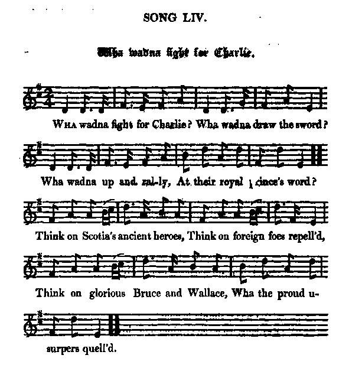
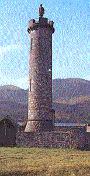

Wha Wadna Fecht For Charlie?
Qui ne combattrait pour Charlie?
Tune - Mélodie (Strathpey)Wha wadna fecht for Charlie?
from Hogg's "Jacobite Relics" 2nd Series N°54, page 100
Variant (Scottish Jig)
Sequenced by Ch. Souchon

|
To the tune
The title comes from a song by an unknown author to the melody "Will you go and marry Katie." In Ireland the tune is rendered as a polka that goes by the titles “Din Tarrant’s”, “Jim O’Keeffe’s (Polka)" and “Mert Plunkett’s.” A Scottish street song to the tune is called “Wha saw the 42nd?” . It is about a "wappenshaw", a military muster. |
A propos de la mélodie
Le titre est tiré des paroles du chant original, "Veux-tu aller épouser Katie?" dont l'auteur est inconnu. En Irlande le morceau est connu comme une polka sous des titres divers: “Din Tarrant’s”, “Jim O’Keeffe’s (Polka)" et “Mert Plunkett’s.” Il existe une parodie écossaise de ce chant intitulée “Qui a vu le 42ème régiment?” . Il y est question de "wappenshaw", de revue militaire. |
|
To the picture:
Memorial Tower (with the statue of an anonymous Highlander) at Glenfinnan This monument was erected in 1815 by the late Alexander McDonald of Glenalladale, on the spot where the standard was unfurled; it bears the following inscription in Latin, Gaelic, and English: "On this spot, where Prince Charles Edward first raised his standard, on the 19th day of August, 1745, when he made the daring and romantic attempt to recover a throne lost by the imprudence of his ancestors; this column is erected by Alexander McDonald, Esq. of Glenalladale, to commemorate the generous zeal, the undaunted bravery, and the inviolable fidelity of his forefathers, and the rest of those who fought and bled in that arduous and unfortunate enterprise." |
 |
A propos de l'illustration:
Tour commémorative de Glennfinnan (avec la statue d'un montagnard écossais anonyme) Ce monument fut érigé en 1815 par Alexandre McDonald de Glenalladale, à l'endroit même où l'étendard fut déployé. Il porte l'inscription suivante en latin, gaélique et anglais: "En ce lieu où le Prince Charles Edouard leva son étendard pour la première fois, le 14 août 1745, lorsqu'il tenta l'aventure courageuse et romantique de la reconquête d'un trône perdu par l'imprudence de ses ancêtres, cette colonne fut élevée par Alexandre McDonald de Glenalladale, en commémoration du dévouement, de la témérité et de la loyauté inébranlable de ses ancêtres et pour le repos de ceux qui combattirent et firent le sacrifice de leur vie en soutenant cette difficile et malheureuse entreprise." |
|
The following vivid and beautiful lines by Professor
J. S. Blackie
well sum up Charles's character and the
history of "the 'Forty-five." The lines were written on
the Monument of Prince Charles Edward at Glenfinnan,
LochShiel:—
"Misfortuned youth, if daring gave a claim, And splendid hazard to a hero's glory, Then history knew than thine no nobler story In the bright rolls of Greek and Roman fame. For thou wert bold, and what thy fancy bred, Of flattering fond conceit thy heart believed; And they who followed where thy bright dreams led, Dashed into hopeless strife, and were deceived. For thou lacked wisdom, and thy speed outran Thy strength; strong trees take longest time to grow; Wishes have wings; but in the state of man, Deeds creep behind with limping pace and slow — Thrice hapless Prince, for thy bold, brilliant whim, Thy friends must pay in woes that overbrim." |
Le beau poème qui suit est du professeur
J.S. Blackie
. Il résume
à merveille le caractère de Charles et l'histoire de 1745. Ces lignes figurent sur le monument au Prince Charles Edouard à Glenfinnan, au bord du Loch Shiel:
"Infortuné jeune homme à l'audace sans borne, Si les risques qu'on prend faisaient la renommée, Tes exploits feraient une plus noble épopée Que celles qu'on connaît de la Grêce ou de Rome. Intrépide, ce qu'engendrait ta fantaisie Ton coeur était heureux de le tenir pour vrai. Pour ceux qui t'ont suivi dans ton rêve éveillé, Ton combat sans issue fut une duperie. Tu manquas de sagesse et tu fus trop véloce, Niant qu'il faut du temps à l'arbre pour pousser, Que si l'esprit est prompt, l'âpre réalité Se traîne. Oui, ta hâte outrepassa ta force. Malheureux Prince dont la splendide hardiesse Fut source pour les tiens d'indicible détresse." Traduction: Chr.Souchon (c) 2011 |